Control of Processes with Long Dead Time: The Smith Predictor
This demo shows the limitations of PI control for processes with long dead time and illustrates the benefits of a control strategy called "Smith Predictor."
The demo is inspired by:
A. Ingimundarson and T. Hagglund, "Robust Tuning Procedures of Dead-Time Compensating Controllers," Control Engineering Practice, 9, 2001, pp. 1195-1208.
Contents
Process Model
The process open-loop response is modeled as a first-order plus dead time with a 40.2 second time constant and 93.9 second time delay:
s = tf('s'); P = exp(-93.9*s) * 5.6/(40.2*s+1); P.InputName = 'u'; P.OutputName = 'y'; P
Transfer function from input "u" to output "y":
5.6
exp(-93.9*s) * ----------
40.2 s + 1
Note that the delay is more than twice the time constant. This model is representative of many chemical processes. Its step response is shown below.
step(P), grid on
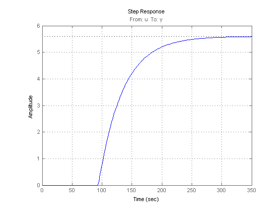 PI Controller
Proportional-Integral (PI) control is a commonly used technique in Process Control. The corresponding control architecture is shown below.
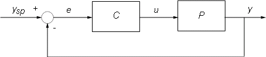
Compensator C is a PI controller in standard form with two tuning parameters: proportional gain Kp and an integral time Ti. We use the PIDTUNE command to design a PI controller with the open loop bandwidth at 0.006 rad/sec:
Cpi = pidtune(P,pidstd(1,1),pidtuneOptions('CrossoverFrequency',0.006));
Cpi
Continuous-time PI controller in standard form:
1 1
Kp * (1 + ---- * ---)
Ti s
with Kp = 0.050143, Ti = 47.2913
To evaluate the performance of the PI controller, close the feedback loop and simulate the responses to step changes in the reference signal ysp and output disturbance signal d. Because of the delay in the feedback path, it is necessary to convert P or Cpi to the state-space representation using the SS command:
Tpi = feedback([P*ss(Cpi),1],1,1,1); % closed-loop model [ysp;d]->y Tpi.InputName = {'ysp' 'd'}; step(Tpi), grid on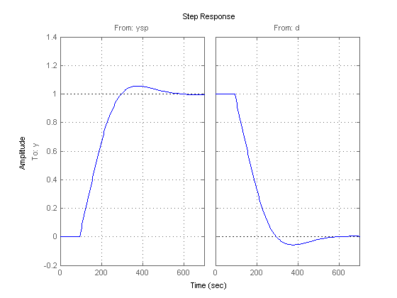
The closed-loop response has acceptable overshoot but is somewhat sluggish (it settles in about 600 seconds). Increasing the proportional gain Kp speeds up the response but also significantly increases overshoot and quickly leads to instability:
Kp3 = [0.06;0.08;0.1]; % try three increasing values of Kp Ti3 = repmat(Cpi.Ti,3,1); % Ti remains the same C3 = pidstd(Kp3,Ti3); % corresponding three PI controllers T3 = feedback(P*ss(C3),1); T3.InputName = 'ysp'; step(T3) title('Loss of stability when increasing Kp')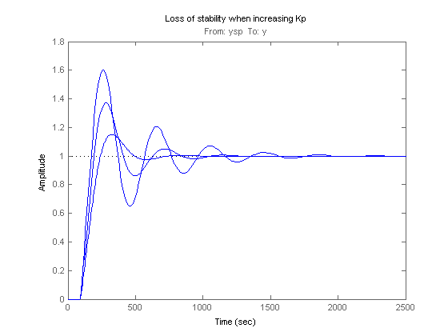
The performance of the PI controller is severely limited by the long dead time. This is because the PI controller has no knowledge of the dead time and reacts too "impatiently" when the actual output y does not match the desired setpoint ysp. Everyone has experienced a similar phenomenon in showers where the water temperature takes a long time to adjust. There, impatience typically leads to alternate scolding by burning hot and freezing cold water. A better strategy consists of waiting for a change in temperature setting to take effect before making further adjustments. And once we have learned what knob setting delivers our favorite temperature, we can get the right temperature in just the time it takes the shower to react. This "optimal" control strategy is the basic idea behind the Smith Predictor scheme.
Smith Predictor
The Smith Predictor control structure is sketched below.

The Smith Predictor uses an internal model Gp to predict the delay-free response yp of the process (e.g., what water temperature a given knob setting will deliver). It then compares this prediction yp with the desired setpoint ysp to decide what adjustments are needed (control u). To prevent drifting and reject external disturbances, the Smith predictor also compares the actual process output with a prediction y1 that takes the dead time into account. The gap dy=y-y1 is fed back through a filter F and contributes to the overall error signal e. Note that dy amounts to the perceived temperature mismatch after waiting long enough for the shower to react.
Deploying the Smith Predictor scheme requires
- A model Gp of the process dynamics and an estimate tau of the process dead time
- Adequate settings for the compensator and filter dynamics (C and F)
Based on the process model, we use:
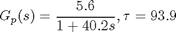
For F, use a first-order filter with a 20 second time constant to capture low-frequency disturbances.
F = 1/(20*s+1); F.InputName = 'dy'; F.OutputName = 'dp';
For C, we re-design the PI controller with the overall plant seen by the PI controller, which includes dynamics from P, Gp, F and dead time. With the help of the Smith Predictor control structure we are able to increase the open loop bandwidth to achieve faster response and increase the phase margin to reduce the overshoot.
% Process P = ss(exp(-93.9*s) * 5.6/(40.2*s+1)); P.InputName = 'u'; P.OutputName = 'y0'; % Prediction model Gp = 5.6/(40.2*s+1); Gp.InputName = 'u'; Gp.OutputName = 'yp'; Dp = exp(-93.9*s); Dp.InputName = 'yp'; Dp.OutputName = 'y1'; % Overall plant Sum1 = sumblk('e','ysp','yp','dp','+--'); Sum2 = sumblk('y','d','y0','++'); Sum3 = sumblk('dy','y','y1','+-'); Sum4 = sumblk('ym','dp','yp','++'); Plant = connect(P,Gp,Dp,F,Sum2,Sum3,Sum4,'u','ym'); % Design PI controller with C = pidtune(Plant,pidstd(1,1),pidtuneOptions('CrossoverFrequency',0.08,'PhaseMargin',90)); C.InputName = 'e'; C.OutputName = 'u'; C
Continuous-time PI controller in standard form, from input "e" to output "u":
1 1
Kp * (1 + ---- * ---)
Ti s
with Kp = 0.57429, Ti = 40.1787
Comparison of PI Controller vs. Smith Predictor
To compare the performance of the two designs, first derive the closed-loop transfer function from ysp,d to y for the Smith Predictor architecture. To facilitate the task of connecting all the blocks involved, name all their input and output channels and let CONNECT do the wiring:
% Assemble closed-loop model from [y_sp,d] to y T = connect(P,Gp,Dp,C,F,Sum1,Sum2,Sum3,{'ysp','d'},'y');
Use STEP to compare the Smith Predictor (blue) with the PI controller (red):
step(T,'b',Tpi,'r--') grid on legend('Smith Predictor','PI Controller')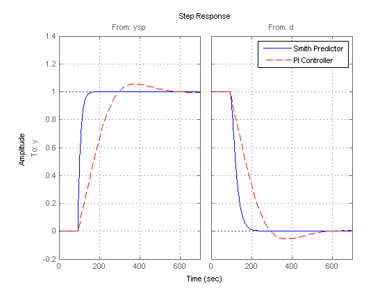
The Smith Predictor provides much faster response with no overshoot. The difference is also visible in the frequency domain by plotting the closed-loop Bode response from ysp to y. Note the higher bandwidth for the Smith Predictor.
bode(T(1,1),'b',Tpi(1,1),'r--',{1e-3,1}) grid on legend('Smith Predictor','PI Controller')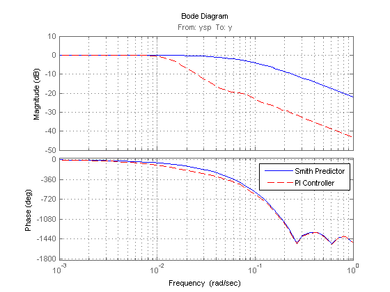
Robustness to Model Mismatch
In the previous analysis, the internal model
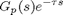
matched the process model P exactly. In practical situations, the internal model is only an approximation of the true process dynamics, so it is important to understand how robust the Smith Predictor is to uncertainty on the process dynamics and dead time.
Consider two perturbed plant models representative of the range of uncertainty on the process parameters:
P1 = exp(-90*s) * 5/(38*s+1); P2 = exp(-100*s) * 6/(42*s+1); bode(P,P1,P2), grid on title('Nominal and Perturbed Process Models')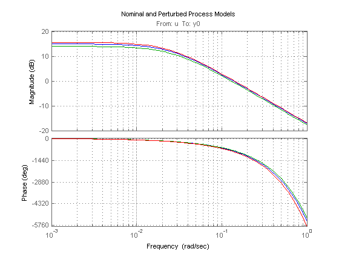
To analyze robustness, collect the nominal and perturbed models into an array of process models, rebuild the closed-loop transfer functions for the PI and Smith Predictor designs, and simulate the closed-loop responses:
Plants = stack(1,P,P1,P2); % array of process models T1 = connect(Plants,Gp,Dp,C,F,Sum1,Sum2,Sum3,{'ysp','d'},'y'); % Smith Tpi = feedback([Plants*Cpi,1],1,1,1); % PI step(T1,'b',Tpi,'r--') grid on legend('Smith Predictor 1','PI Controller')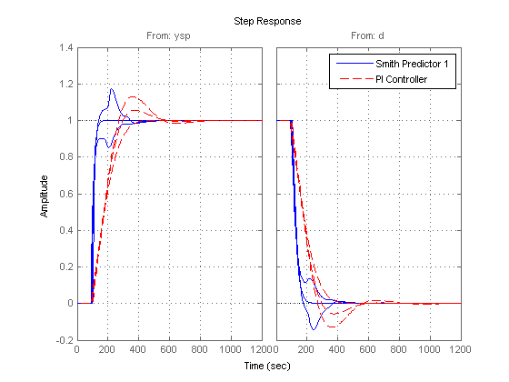
Both designs are sensitive to model mismatch, as confirmed by the closed-loop Bode plots:
bode(T1(1,1),'b',Tpi(1,1),'r--') grid on legend('Smith Predictor 1','PI Controller')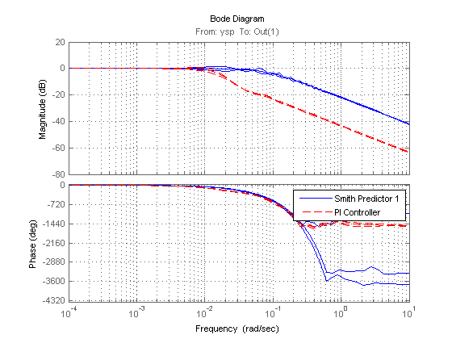
Improving Robustness
To reduce the Smith Predictor's sensitivity to modeling errors, check the stability margins for the inner and outer loops. The inner loop C has open-loop transfer C*Gp so the stability margin are obtained by
margin(C * Gp)
title('Stability Margins for the Inner Loop (C)')
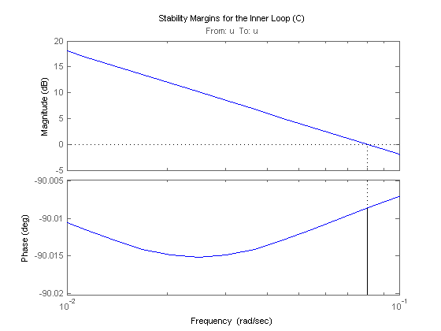 The inner loop has comfortable gain and phase margins so focus on the outer loop next. Use CONNECT to derive the open-loop transfer function L from ysp to dp with the inner loop closed:
Sum1o = sumblk('e','ysp','yp','+-'); % open the loop at dp L = connect(P,Gp,Dp,C,F,Sum1o,Sum2,Sum3,{'ysp','d'},'dp'); bode(L(1,1))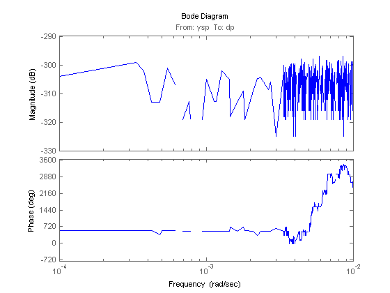
Note the -300dB gain: this transfer function is essentially zero, which is to be expected when the process and prediction models match exactly. To get insight into the stability margins for the outer loop, we need to work with one of the perturbed process models, e.g., P1:
H = connect(Plants(:,:,2),Gp,Dp,C,Sum1o,Sum2,Sum3,{'ysp','d'},'dy');
H = H(1,1); % open-loop transfer ysp -> dy
L = F * H;
margin(L)
title('Stability Margins for the Outer Loop (F)')
grid on, set(gca,'xlim',[1e-2 1])
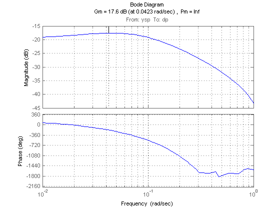 This gain curve has a hump near 0.04 rad/s that lowers the gain margin and increases the hump in the closed-loop step response. To fix this issue, pick a filter F that rolls off earlier and more quickly:
F = (1+10*s)/(1+100*s); F.InputName = 'dy'; F.OutputName = 'dp';
Verify that the gain margin has improved near the 0.04 rad/s phase crossing:
L = F * H; margin(L) title('Stability Margins for the Outer Loop with Modified F') grid on, set(gca,'xlim',[1e-2 1])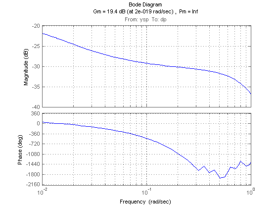
Finally, simulate the closed-loop responses with the modified filter:
T2 = connect(Plants,Gp,Dp,C,F,Sum1,Sum2,Sum3,{'ysp','d'},'y');
step(T2,'b',Tpi,'r--')
grid on
legend('Smith Predictor 2','PI Controller')
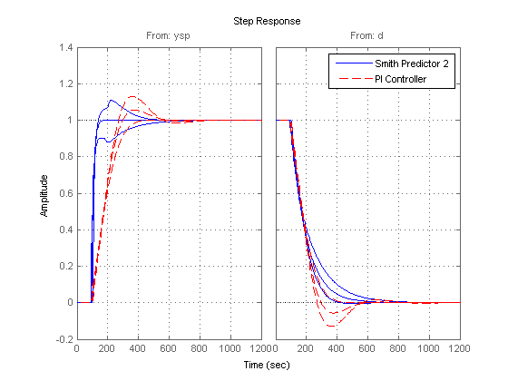 The modified design provides more consistent performance at the expense of a slightly slower nominal response.
Improving Disturbance Rejection
Formulas for the closed-loop transfer function from d to y show that the optimal choice for F is

where tau is the internal model's dead time. This choice achieves perfect disturbance rejection regardless of the mismatch between P and Gp. Unfortunately, such "negative delay" is not causal and cannot be implemented. In the paper:
Huang, H.-P., et al., "A Modified Smith Predictor with an Approximate Inverse of Dead Time," AiChE Journal, 36 (1990), pp. 1025-1031
the authors suggest using the phase lead approximation:
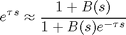
where B is a low-pass filter with the same time constant as the internal model Gp. You can test this scheme as follows:
Define B(s) and F(s)
B = ss(0.05/(40*s+1)); tau = totaldelay(Dp); F = (1+B)/(1+B*exp(-tau*s)); F.InputName = 'dy'; F.OutputName = 'dp';
Re-design PI controller with reduced bandwidth
Plant = connect(P,Gp,Dp,F,Sum2,Sum3,Sum4,'u','ym'); C = pidtune(Plant,pidstd(1,1),pidtuneOptions('CrossoverFrequency',0.02,'PhaseMargin',90)); C.InputName = 'e'; C.OutputName = 'u'; C
Continuous-time PI controller in standard form, from input "e" to output "u":
1 1
Kp * (1 + ---- * ---)
Ti s
with Kp = 0.14357, Ti = 40.1376
Computed closed-loop model T3
T3 = connect(Plants,Gp,Dp,C,F,Sum1,Sum2,Sum3,{'ysp','d'},'y');
Compare T3 with T2 and Tpi
step(T2,'b',T3,'g',Tpi,'r--') grid on legend('Smith Predictor 2','Smith Predictor 3','PI Controller')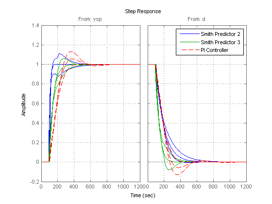
This comparison shows that our last design speeds up disturbance rejection at the expense of slower setpoint tracking.